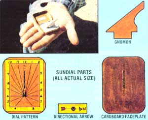

I made the pocket watch shown in the accompanying photo for the price of a small tin box of aspirin! To do the same, you'll have to first purchase (or raid the medicine chest for) one of the little flat metal boxes of pain-killer. Then put the aspirin tablets in a labeled bottle and-if you have a yen for the decorative-paint the box.
Now, use the patterns provided here to reproduce the faceplate and the gnomon (or pointer) on thin cardboard, and cut out both pieces. Be sure to make the slit in the center of the face before fitting the cardboard faceplate into the bottom of the metal box, securing it with adhesive if necessary.
Your next step is to cut out the provided dial and glue it to the cardboard, matching the slits. (Of course, you can trace the pattern if you don't want to leave a hole in your magazine.)
Finally, glue the directional arrow into the lid of the aspirin container... in such a way that when its point is aimed toward the north, the 12 on the clock face will be northbound, as well.
To read the time, simply open the box up flat in your hand, point the arrow to the north, and insert the gnomon so that its tallest edge will be nearest the number 12... the shadow will point to the approximate time. (Naturally, your suntime-reader will be an hour slow during daylight-saving time!)
There you have it: a handy timepiece that's shock, crush, and dust resistant. In fact, the only real drawback to the little gem is that it isn't waterproof. . . but who'd use a sundial in the rain, anyway?
|
 |
|
|